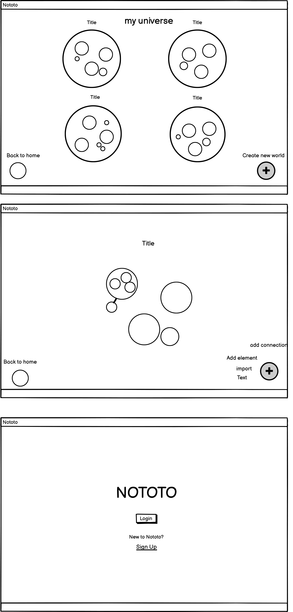
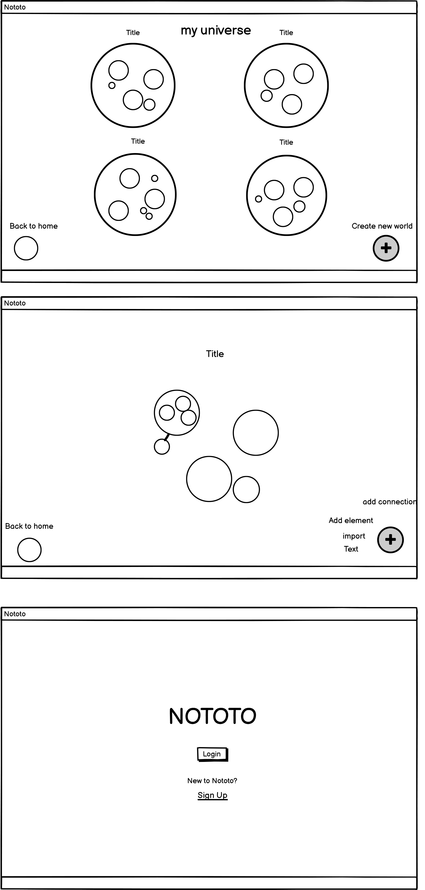

Sketches
We began by sketching our ideas for the interface to brainstom potential layouts and functionalities.

After combining all our ideas from our sketches, we created a lo-fi prototype for our interface.
For this group project, we created a high fidelity prototype for the startup, Nototo, based off of a description of their interface. Throughout the process, we created sketches, lo-fi, and hi-fi prototypes, received Feedback from an industry professional, and uploaded our prototype to usertesting.com to get real user input.
Nototo is a note-taking software that allows users to take advantage of their visual-spatial memory. The intention behind the workspace is to store any volume of information in however layout a user decides. The result is an infinite “map” that the user(s) continuously builds upon. A key feature is the zooming aspect of the workspace, whereby all the notes are visible when a user zooms out and as the user zooms in, more specific categories, media and notes become visible.
We began by sketching our ideas for the interface to brainstom potential layouts and functionalities.
After combining all our ideas from our sketches, we created a lo-fi prototype for our interface.
After creating a lo-fi prototype for Nototo, we made our hi-fi prototype in Figma to implement our ideas.
Sign into Nototo, add an image to the blank document in the biology lab bubble, then, log out.
The user had a hard time navigating through the button options. The user expressed confusion when attempting to add the image to the document as they weren’t sure if the “add element” button would allow them to add an image. Other than that, the user expressed that the layout was intuitive but would have liked the title of the image to appear within the document somewhere (maybe outside the document at the bottom). Additionally, they wanted greater freedom in being able to customize and edit their layout than what was modeled in the prototype. They enjoyed how quickly it was to add an image and wanted that to be the case for other elements.
Although the user expressed the interface seemed intuitive, they had trouble adding an image to the lab document. They initially thought that the image should have been added as its own bubble within the biology bubble. This user expressed that the interface and layout was visually appealing and that the user flow was engaging.
This user had difficulty adding the image due to the different way they thought of adding the image (with the toolbar on top of the document as opposed to the “add element” button at the bottom).
Explanation of results: Overall, though the interface seemed intuitive to most of the users, there was confusion across the board for how to properly insert an image to a document or element in one of the bubbles. The users had to experiment clicking on various other elements first before realizing what they had to do. As a result, they would kind of backtrack to where their initial startpoint was and after exploring the other elements, move from that initial startpoint.
To add the image, the user had to navigate to the biology topic bubble. There, they had to click on the lab bubble and further click on the blank document within that lab section. From there, they had to press the “add element” button which directs them to import an image or import video. The user then had to click on import image, select the image from their computer, and then click “select image.” One that was done, the user had to click on my account and navigate to the “sign out” bubble.
Most of the users were able to complete the task but it was evident that they tried other methods first to do so. However, those that weren’t able to complete the task couldn’t complete it because of confusion pertaining to which method of adding the image was intuitive for them.